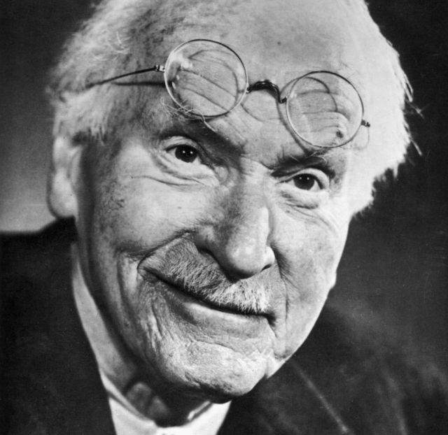
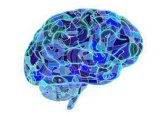
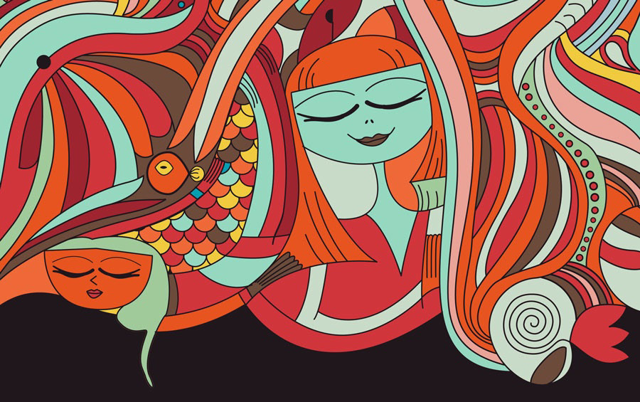
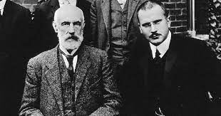

CONTENIDO |
IntroducciónEn esta revista se redactara de manera concreta las teoría analítica dada por el psico-analista Carl Gustav Jung y su vida antes y después del lanzamiento de esta teoría que hoy en día sigue vigente; ademas de ser una revista científica de modo que es formal y concreta con los temas abarcados durante el formato.
|
Carl Gustav JungFue un médico psiquiatra, psicólogo y ensayista suizo, figura
clave en la etapa inicial del psicoanálisis; posteriormente,
fundador de la escuela de psicología analítica, también
llamada psicología de los complejos y psicología profunda.
Se le relaciona a menudo con Sigmund Freud; de quien
fuera colaborador en sus comienzos. Jung fue un pionero de
la psicología profunda y uno de los estudiosos de esta
disciplina más ampliamente leídos en el siglo XX. Su
abordaje teórico y clínico enfatizó laconexión funcional entre
la estructura de la psique y la de sus productos, es decir, sus
manifestaciones culturales. Esto le impulsó aincorporar en
su metodología nociones procedentes de la antropología, la
alquimia, la interpretación de los sueños, el arte la mitología,
la religión y la filosofía. ;
Jung no fue el primero en dedicarse al und de la actividad
onírica. No obstante, sus contribuciones.al análisis de los
sueños fueron extensivas y altamente influyentes. Escribió
e una prolífica obra- Aunque durante la
mayor parte de su vida centró su
trabajo en la formulación de teorías
psicológicas y enJarpráctic
clínica, también ingursiónó
otros campos delas
humanidades, desde
comparativo de las reli
filosofía y la sociologf
crítica del arte y lauliteratura.
|
Teoría Analítica de Carl JungLa psicología analítica es una corriente psicoterapéutica que confiere un papel protagonista a la
vida humana, adoptando un enfoque prospectivo de los temas o problemas que trae el paciente a
consulta. Esto quiere decir que, aunque las experiencias pasadas son importantes para
comprenderlas circunstancias actuales, el presente también es relevante, puesto que contiene las
semillas para el crecimiento y desarrollo futuro.
El inconsciente personal
En la psicología analítica, el yo es siempre el centro de nuestra
conciencia y hace su aparición a partir del arquetipo del sí mismo, el
cual es comprendido como el verdadero y auténtico fundamento de
nuestra personalidad. De esta manera, el yo deja de ser un ente
rector y pasa a ser un complejo más que, a diferencia de otros, tiene
una identidad.
El inconsciente personal es el resultado de la interacción entre la
sociedad y el inconsciente colectivo

El inconsciente colectivo
Jung profundiza en el concepto de inconsciente colectivo gracias al
desconcierto que le generaron algunos fenómenos que identificó en sus
pacientes y que no podían ser explicados por la acción del inconsciente
personal. Muchos de los contenidos de estos fenómenos tenían similitudes
con temas mitológicos y religiosos del pasado de los pueblos. Esto llevó a
Jung a creer que era el eco de un componente colectivo que se
manifestaba de manera simbólica.

Los arquetipos
Dentro de la visión de Jung, podemos pensar en los arquetipos
como imágenes en potencia, como contenedores temáticos sin
contenido. Ellos, en sí mismos, no son más que tendencias y entes
potenciales. Jung (como se citó en Sharp, 1994) los define como
«factores y motivos que ordenan los elementos psíquicos en ciertas
imágenes... pero de tal forma que solo se pueden reconocer por los
efectos que producen».
|
El incosncienteSegún Carl Jung, el inconsciente es una parte fundamental
de la psique humana. Jung propuso la existencia de dos
capas principales en la psique: el consciente y el
inconsciente. Mientras que el consciente abarca
todo aquello de lo que somos conscientes en un
momento dado, el inconsciente incluye todo
aquello de lo que no somos conscientes en un
nivel superficial.El inconsciente, para Jung, no se
limita solo a lo personal, sino que también incluye
una capa más profunda llamada inconsciente
colectivo.

El inconsciente personal está compuesto
por los aspectos olvidados, reprimidos o desconocidos
de nuestra propia historia y experiencias individuales. Estos contenidos
inconscientes personales pueden ser traumas no resueltos, complejos
emocionales o recuerdos reprimidos.Por otro lado, el inconsciente colectivo,
según Jung, es una capa más profunda y abarca los patrones universales y
arquetipos compartidos por todas las culturas y sociedades humanas. Estos
arquetipos son imágenes primordiales y símbolos que surgen de la experiencia
común de la humanidad y están presentes en los mitos, las leyendas y los
sueños de todas las culturas.Jung consideraba que el inconsciente colectivo
jugaba un papel importante en la formación de la personalidad y la psicología
de un individuo. Creía que los arquetipos del inconsciente colectivo se
manifiestan en los sueños, fantasías y creaciones artísticas, y que influyen en
nuestra percepción del mundo y en nuestra forma de comportarnos.La
exploración del inconsciente, tanto personal como colectivo, era fundamental en
el enfoque terapéutico de Jung. A través de técnicas
como el análisis de los sueños, la imaginación activa y
la interpretación simbólica, Jung buscaba ayudar a las
personas a integrar los contenidos inconscientes en su
vida consciente y alcanzar un mayor equilibrio y
autorrealización.Es importante destacar que los
conceptos de Jung sobre el inconsciente difieren en
ciertos aspectos de los de Sigmund Freud, otro
influyente psicólogo de la época. Mientras que Freud se
centraba más en el inconsciente como un reservorio de
impulsos y deseos reprimidos, Jung amplió esta noción
para incluir dimensiones más profundas y colectivas de
la psique.

|
Inconsciente Colectivo
Para Jung, el inconsciente colectivo es aquello
que se encuentra en el inconsciente y que es
común entre los seres humanos.No habla de ;
inconsciente individual, sino que se centra en el
aspecto colectivo. Para Jung este concepto está
conectado con todo lo que le ha ocurrido al ser
humano en el pasado y se ha transmitido a lo
largo de los años a las distintas
generaciones.Se centra en el estudio de la
conciencia colectiva social para destacar que las
experiencias pasadas ocurridas han influido en el modo de vida de los
sujetos.La psicología analítica parte de la existencia de un inconsciente
colectivo en la psique de cada individuo, de modo que la consciencia,
ligada al yo, no sólo ha de vérselas con los contenidos propios de lo
inconsciente personal, los complejos, personalizados en lo que Jung
llama sombra, sino con todos los contenidos transpersonales que
moran en nuestro interior, los arquetipos. La relación de este yo -un
complejo entre los demás, pero dotado de consciencia- con lo
inconsciente colectivo a lo largo de la biografía constituye el proceso de
individuación, o autorrealización psíquica.Este proceso, entendido
como una articulación de opuestos psíquicos que se presenta en forma
de conflictos, compensaciones y complementariedades, consiste en la
diferenciación consciente por parte del individuo de dos grandes
sistemas de opuestos: individual/colectivo y consciente/inconsciente.
Dentro de éstos se incluyen externo/interno, antes/después, sí/no o
cualquiera de los opuestos que la consciencia establece para
configurar una realidad desde lo Real.El proceso de individuación tiene
la naturalidad del crecimiento y como tal sigue las fases de la vida desde
la infancia a la senectud, con sus diversas características. En cada
momento dominan distintos aspectos biológicos, sociales, arquetípicos
que van sacando a la luz el carácter del individuo, su individualidad
psíquica, que Jung llama sí-mismo, sujeto tanto de la conciencia como
de lo inconsciente.
|
La amistad entre Jung y FreudHacia 1906, un joven Jung comenzó una relación epistolar con Freud, por aquel entonces un ídolo para él.
Tanto era así que, poco a poco, Jung iría escalando entre los discípulos del fundador del psicoanálisis hasta
convertirse en su mano derecha. Jung terminaría convirtiéndose en presidente de la Asociación Psicoanalítica
Internacional y editor del Anuario de investigaciones psicoanalíticas y psicopatológicas (Jahrbuch fúr
psychoanalystische und psychopathologische). Cuando Freud era una persona non grata en el mundo de la
medicina psicológica, Jung fue uno de los que con más ahínco defendió al austríaco
Para Freud, la libido era una energía puramente sexual, mientras que para su aventajado discípulo era mucho
más, el interés que despierta el sujeto hacia diversos objetos, la energía que explica la dinámica del
funcionamiento de la psique. Además, mientras que según Freud el insconsciente tenía un cariz negativo,
siendo el lugar de la mente donde se acumulan todos los escombros de nuestra consciencia -esto es, los
traumas, los deseos reprimidos, las fobias, etc.-, para Jung, de nuevo, el inconsciente era mucho más y no
necesariamente negativo. El inconsciente, para Jung, es también una fuente casi inagotable de saber y
creatividad, un cajón de sastre con una cantidad de información casi disparatada, en la que el buen
observador puede lograr extraer datos valiosísimos.
El método extremadamente racional de Freud tampoco era compartido por Jung, que consideraba que, de esa
manera “cientificista”, se dejaban de lado aspectos y fenómenos que eran importantes a pesar de que no
pudieran ser demostrados por la ciencia. De esta manera, Jung desarrolló la intuición como función
dominante, mientras que para Freud lo era la sensación.
El primero rechazaba la tendencia aceptada entre los psicoterapeutas de tipificar y rotular a los pacientes,
pues opinaba que cada uno era distinto, y su enfermedad mental, única según cada caso concreto. Para Jung
la terapia no empezaba y acababa en la observación de lo que estaba mal, sino que era también necesario
prestar atención a lo que estaba bien y, a partir de ahí, empezar a trabajar.La ruptura no tardaría en suceder,
haciéndose definitiva en 1913, cuando Freud, en una carta, le propone “que abandonemos nuestras
relaciones personales enteramente”.
Jung quedó destrozado, abandonando su puesto en la Universidad de Zúrich y sufriendo un colapso nervioso
que se había gestado durante meses en el período de tensión con quien fuera se maestro y amigo.
Empezará entonces un periodo de oscuridad en la vida de Jung que, sin embargo, será el momento de su
renacimiento como ente autónomo y original dentro del mundo de la psiquiatría. Hasta 1919 no publicaría
apenas, dedicando su tiempo a su clínica privada y a autoanalizarse a sí mismo en la intimidad de la soledad.
De ahí surgirían las tesis más originales que aglutinarán lo que más tarde será conocida como Psicología
analítica, por la que Jung acabaría pasando a la historia no sólo como discípulo de Freud, sino también por
derecho propio.
Publicó sus tesis en la que sería su gran aportación a la psicología: Tipos psicológicos, en 1920. Tras esto,
emprendió largos viajes por América y Africa, desarrollando un enorme interés por las tradiciones, mitos y
leyendas populares, suponiendo en todos ellos un influjo en el inconsciente que reforzaría su apuesta por la
existencia de un inconsciente colectivo.
|